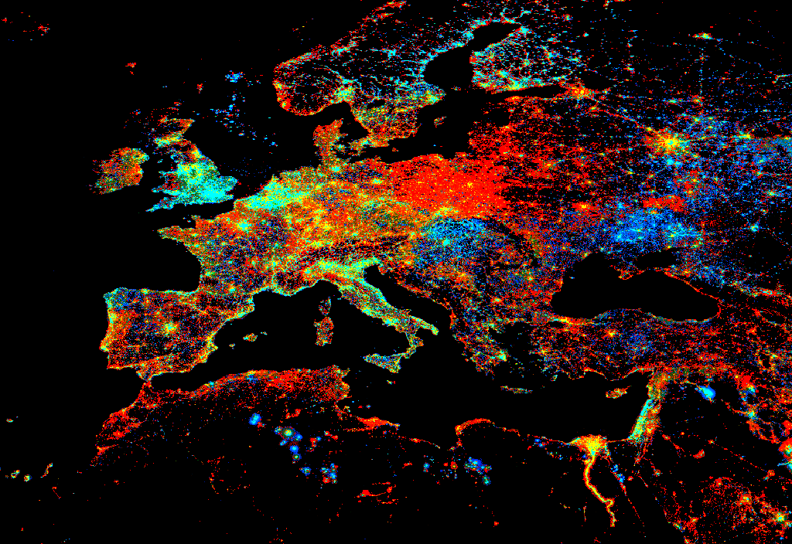

Trendy Lights
This example highlights how the EE Julia API can be used to process time series of data and calculate a trend in time. Example from the Javascript Trendy Lights example.
Code
using EarthEngine
Initialize()
# Add a band containing image date as years since 1990.
function createTimeBand(img)
img = EE.Image(img)
starttime = EE.Date("1990-01-01")
year = difference(date(img), starttime, "year")
return float(addBands(year,img))
end
# get night light collection and add time band
collection = map(
select(
EE.ImageCollection("NOAA/DMSP-OLS/CALIBRATED_LIGHTS_V4")
,"avg_vis"
), createTimeBand
)
# Fit a linear trend to the nighttime lights collection.
fit = reduce(collection, linearFit())
# define a region to view results
pt = Point(15, 45)
region = bounds(buffer(pt,25e5))
# Display trend in red/blue, brightness in green.
getThumbURL(fit, Dict(
:min => 0,
:max => (0.18, 20, -0.18,),
:bands => ["scale", "offset", "scale"],
:dimensions => 1024,
:region => region,
:format => "png"
))Expected Results
